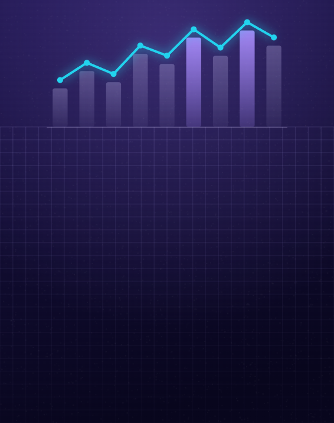
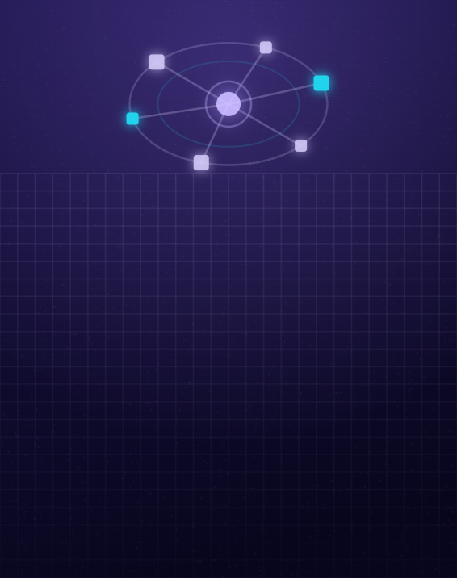
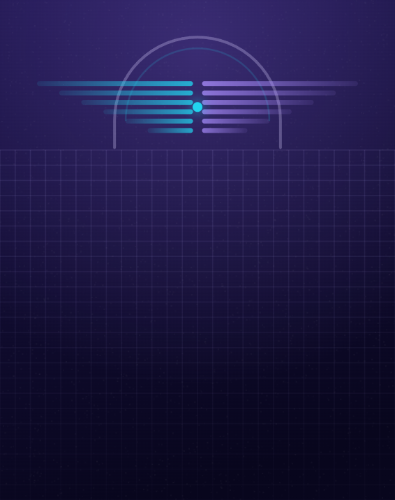
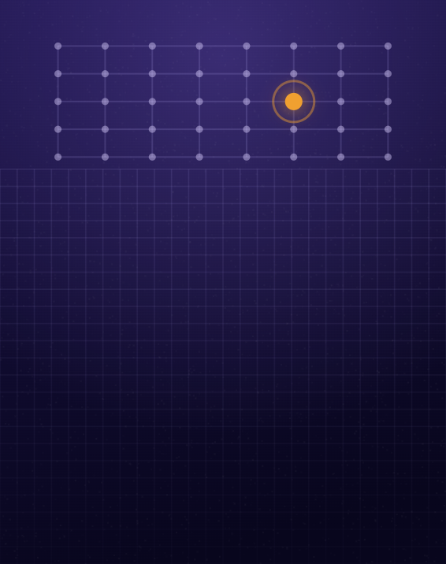
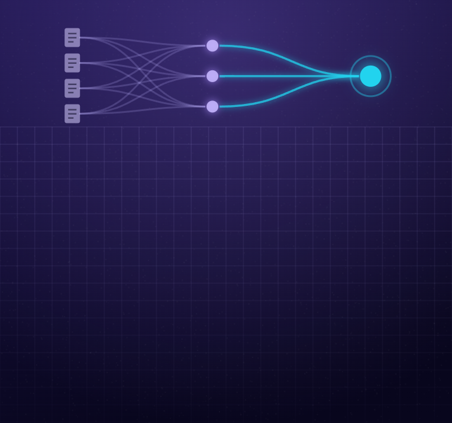
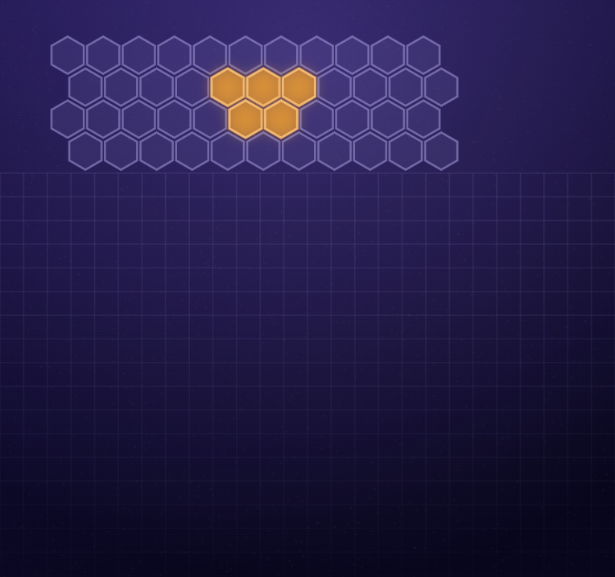
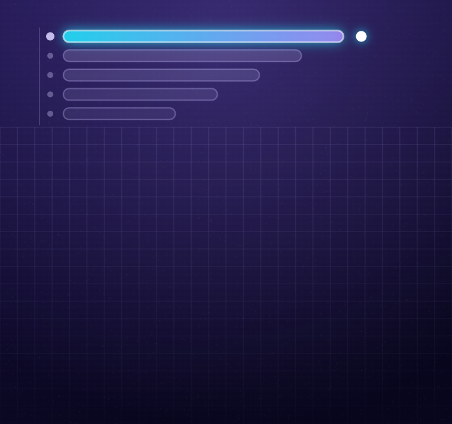
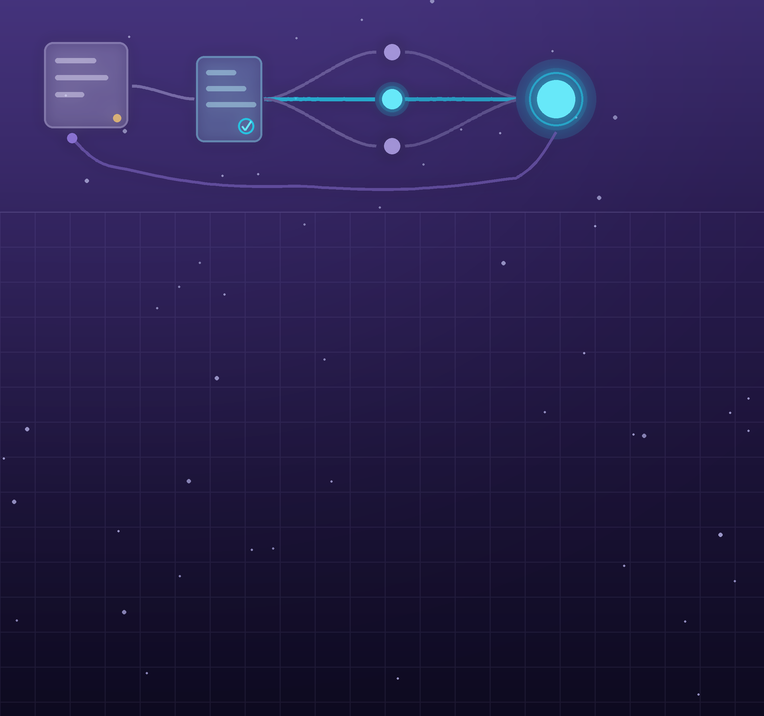

AX실시간 HR 인력 대시보드
신사업 TF의 인력 현황·역량 갭을 실시간 파악하는 HR 대시보드 기획. 역량 레이더 차트와 QR 기반 자동 출결 아이디어 제안.
MY ROLE아이디어 개발 · 대시보드 구성 설계
PARK JIN · 박진
Strategy · Data · Backend
Problem Solver
SCROLL
01 — ABOUT
데이터에 근거해 만들고, 끝까지 배포합니다
PARK JIN — PLANNER · BACKEND
데이터가 기본기입니다. 컴퓨터통계학을 전공하며 크롤링부터 NLP, 공간분석까지 — 감이 아닌 데이터로 근거를 만드는 습관을 길렀습니다. LG전자 DX School 5기에서는 기획부터 배포까지 전 과정을 완주하며 세 개 프로젝트에서 수상했고(우수상 2·장려상 1), FastAPI 기반 실시간 시스템으로 실제 가전 연동과 AWS 배포까지 끝을 봤습니다.
“분석에서 멈추지 않고, 실행까지 이어지는 개발자가 되고 싶습니다.”
02 — SKILLS
저의 경험으로 만들어진 기술들입니다
TECH STACK
실시간 시스템의 서버·API·데이터베이스를 직접 설계하고 구현합니다.
TimescaleDB · REST API 연동(SmartThings·Coway) · SSE
데이터 수집·분석부터 NLP·LLM 기반 서비스까지 다룹니다.
NLP(SBERT·KoELECTRA·LDA) · RAG 파이프라인
공간데이터 분석과 배포·운영 인프라를 구성합니다.
공간분석(IDW 보간) · CI/CD · systemd · IoT 센서
CERTIFICATIONS
한국데이터산업진흥원 · 2026.06.05 취득
AWARDS
BX 우수상 · CX 우수상 · DX 장려상
AILAGro · 데이터로 미래를 그리는 AI 아이디어 공모전
직업능력심사평가원 원장상 · 고용노동부 주최 · 팀 Second Look 팀장 · 2026.09
03 — PROJECTS
LG전자 DX School 5기 — AX · BX · CX · DX 4단계 프로젝트

AX신사업 TF의 인력 현황·역량 갭을 실시간 파악하는 HR 대시보드 기획. 역량 레이더 차트와 QR 기반 자동 출결 아이디어 제안.

BX초고령사회 샌드위치 세대를 위한 ThinQ AI 캐릭터 BX 기획 — “말하지 않아도 가족의 일상을 이어주는 홈 매니저”.

CX네이버 카페·블로그 20만+건 크롤링, SBERT·KoELECTRA NLP 분석으로 기회영역을 도출한 AI 현관 로봇 CX 기획.

DX요양병원 집단감염을 2~3주 먼저 감지해 ThinQ 가전을 자동 제어하는 IoT 사전대응 시스템. 6주 · 5인 팀 · AWS 실배포.
04 — CONTEST
공모전 경험

제1회 · 2026 · 팀 카페인(CAFE-IN) 4인 · 역할: 아이디어 디벨롭·발표자료
하루 61개씩 폐업하는 개인 카페를 위한 ‘AI 공동 경영자’ AILAGro. 트렌드를 보여주고 끝나는 기존 도구와 달리 발주·마케팅·레시피 개선까지 실행하는 에이전트를 제안했습니다.

기상청 주최 · 2026 · 팀 참가
강원 전주 138만 개에 8종+ 공공데이터를 융합해 「발화원 × 연소조건」 곱 모델로 화재위험을 정량화·예측. 위험구역 20.8만 개를 도출했습니다.

산업통상자원부 공공데이터 활용 아이디어 공모전 · 광주/전남 · 팀 프로젝트
공공데이터를 수집해 LightGBM 랭킹 모델과 근거 기반 추천 API를 구현, 팀의 1차 MVP를 대체할 수 있는 2차 MVP 백엔드를 만들었습니다.

고용노동부 주최 · 2026 · 자유과제 · 팀 Second Look 6인 팀장 · 본선 수상
진위를 AI가 판정하는 대신 공식 근거와 확인 질문을 붙여 60대가 스스로 판단하게 하는 PWA 「곁눈」. PM으로 문제 정의·근거 통합·실측 지표와 최종 기획서를 맡았습니다.
05 — TIMELINE
걸어온 길입니다
직업능력심사평가원 원장상 · 팀 Second Look 팀장 · 「곁눈」
BX·CX 우수상, DX 장려상
데이터분석 준전문가 · 한국데이터산업진흥원
데이터 분석·통계 기반 전공 이수
AX·BX·CX·DX 전 과정 프로젝트 수행
통계·프로그래밍 기초부터 시작
06 — CONTACT · END OF JOURNEY
언제든 편하게 연락 주세요. 새로운 기회와 협업을 환영합니다.
메일 보내기 ✉© 2026 PARK JIN